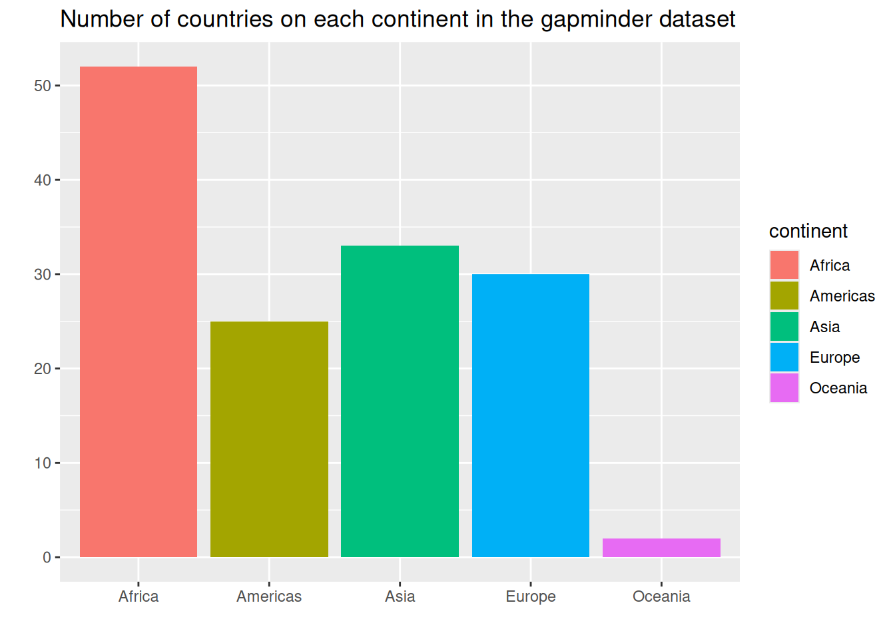
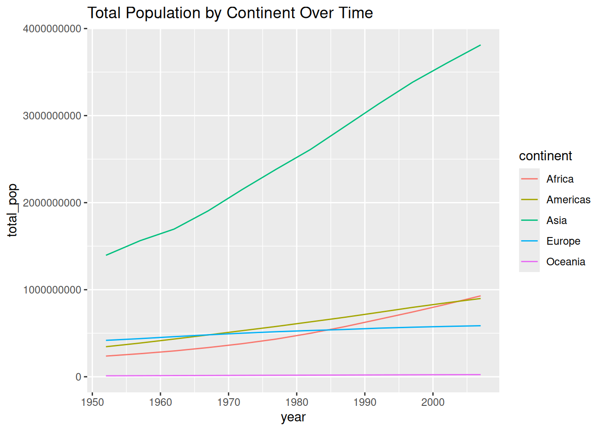
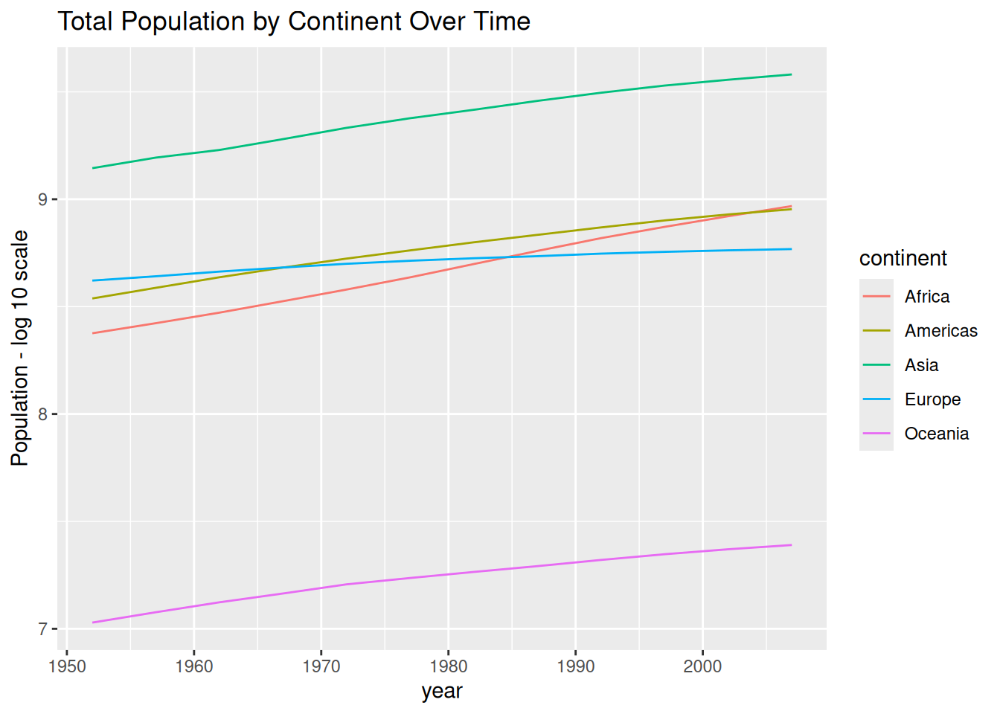

Data Wrangling
Whipping your data into shape.
WarningThis page covers…
- Understanding conditions better
- Practice problems with
dplyrfunctions:mutate(),filter(),select(),arrange(), andsummarize(). - Practice using the pipe
|>
IMPORTANT - if you want to actually learn and remember (so you can do well on quizzes…), be sure to struggle with these exercises, looking back at the notes as needed, figuring out how to solve it yourself (or with tutor help).
If you just look at the solutions, or ask Claude/Gemini for help, you’ll short-circuit your memory formation. See AI Policy on the syllabus for a longer explanation of why this is so important.
Side quest: How conditions actually work
First, let’s look back at this code one more time
filter(msleep, vore == "carni")The vore == "carni" part asks (==), for each row, is the vore column equal to the text carni? We have 83 animals in our dataset, so the vore == "carni" bit will become a vector of 83 TRUE and FALSE answers. Literally. filter uses these TRUE and FALSE values to decide which rows to keep.
To demonstrate, consider the code below, which seems insane but totally works (remember, T and F are valid shorthand for TRUE and FALSE)
filter(msleep, c(T, F, F, F, F, F, T, F, T, F,
F, F, F, F, F, F, F, T, F, F,
F, F, F, F, F, F, F, T, F, F,
T, T, F, F, F, F, T, F, F, F,
F, F, F, F, T, F, T, F, F, F,
T, T, T, F, F, F, F, F, T, T,
F, F, F, F, F, F, F, F, F, F,
F, F, F, F, F, F, F, F, F, T,
T, T, T))| name | genus | vore | order | conservation | sleep_total | sleep_rem | sleep_cycle | awake | brainwt | bodywt |
|---|---|---|---|---|---|---|---|---|---|---|
| Cheetah | Acinonyx | carni | Carnivora | lc | 12.1 | NA | NA | 11.90 | NA | 50.00 |
| Northern fur seal | Callorhinus | carni | Carnivora | vu | 8.7 | 1.4 | 0.3833333 | 15.30 | NA | 20.49 |
| Dog | Canis | carni | Carnivora | domesticated | 10.1 | 2.9 | 0.3333333 | 13.90 | 0.0700 | 14.00 |
| Long-nosed armadillo | Dasypus | carni | Cingulata | lc | 17.4 | 3.1 | 0.3833333 | 6.60 | 0.0108 | 3.50 |
| Domestic cat | Felis | carni | Carnivora | domesticated | 12.5 | 3.2 | 0.4166667 | 11.50 | 0.0256 | 3.30 |
| Pilot whale | Globicephalus | carni | Cetacea | cd | 2.7 | 0.1 | NA | 21.35 | NA | 800.00 |
| Gray seal | Haliochoerus | carni | Carnivora | lc | 6.2 | 1.5 | NA | 17.80 | 0.3250 | 85.00 |
| Thick-tailed opposum | Lutreolina | carni | Didelphimorphia | lc | 19.4 | 6.6 | NA | 4.60 | NA | 0.37 |
The first value in the vector is TRUE. So we keep the first row (the Cheetah). The second values is FALSE, so we don’t keep that one (Owl Monkey). And so forth. We are left with just the carnivores, though we had to hand-specifiy which rows those were. Obviously this approach is very tedious, prohibitively so for larger datasets, so we use expressions like vore == "carni" instead.
This little side question was just to show you what these expressions are doing: vore == "carni" produces a vector of TRUE and FALSE values, indicating to filter which rows to keep.
A simpler example to illustrate:
minidata <- data.frame(x = c(1, 2, 3, 4, 5),
y = c("a", "b", "c", "d", "e"))
minidata| x | y |
|---|---|
| 1 | a |
| 2 | b |
| 3 | c |
| 4 | d |
| 5 | e |
filter(minidata, x > 3)| x | y |
|---|---|
| 4 | d |
| 5 | e |
filter(minidata, c(F, F, F, T, T))| x | y |
|---|---|
| 4 | d |
| 5 | e |
You can pick arbitrary rows out:
filter(minidata, c(F, T, F, T, F))| x | y |
|---|---|
| 2 | b |
| 4 | d |
Practice Exercises
The following packages have already been loaded for you:
library(tidyverse)
library(stat20data)
library(gapminder)Practice Section: gapminder
For these first questions we’ll work with the gapminder dataset you saw in class. This dataset contains information about countries over time, including statistics like population, life expectancy, and GDP per capita. We’ll use this dataset to practice our data wrangling skills.
| country | continent | year | lifeExp | pop | gdpPercap |
|---|---|---|---|---|---|
| Afghanistan | Asia | 1952 | 28.801 | 8425333 | 779.4453 |
| Afghanistan | Asia | 1957 | 30.332 | 9240934 | 820.8530 |
| Afghanistan | Asia | 1962 | 31.997 | 10267083 | 853.1007 |
| Afghanistan | Asia | 1967 | 34.020 | 11537966 | 836.1971 |
| Afghanistan | Asia | 1972 | 36.088 | 13079460 | 739.9811 |
| Afghanistan | Asia | 1977 | 38.438 | 14880372 | 786.1134 |
| Afghanistan | Asia | 1982 | 39.854 | 12881816 | 978.0114 |
| Afghanistan | Asia | 1987 | 40.822 | 13867957 | 852.3959 |
This is just the first few rows. We have one row for each country in each year, with statistics about the country that year.
Q: Do we have data for every country in every year?
It’s useful to know how complete a dataset is. Fill in the blank in the following code that counts how many countries have data in each year:
Show answer
gapminder |>
group_by(year) |>
summarize(n = n())# A tibble: 12 × 2
year n
<int> <int>
1 1952 142
2 1957 142
3 1962 142
4 1967 142
5 1972 142
6 1977 142
7 1982 142
8 1987 142
9 1992 142
10 1997 142
11 2002 142
12 2007 142Looks like all the data is accounted for in every year.
Q: How many countries do we have for each continent?
The following code is almost correct.
gapminder |>
group_by(continent) |>
summarize(n = n())# A tibble: 5 × 2
continent n
<fct> <int>
1 Africa 624
2 Americas 300
3 Asia 396
4 Europe 360
5 Oceania 24Hmm… it says we have 624 countries in Africa? These numberare all too high. What’s going on?
Based on what you know about the dataset (specifically - what does one row represent?), add a pipeline step that will fix this issue and generate correct numbers.
Show answer
The problem is that we have multiple rows for each country, one for each year. We just saw that we have all 142 countries ever year, so we can fix this by filtering to just one year (e.g., 2007).
gapminder |>
filter(year == 2007) |>
group_by(continent) |>
summarize(n = n())# A tibble: 5 × 2
continent n
<fct> <int>
1 Africa 52
2 Americas 25
3 Asia 33
4 Europe 30
5 Oceania 2Q: Let’s keep going with this pipeline. Take your solution from the previous step, and:
- Pipe it to
ggplot()to make a bar plot of the number of countries in each continent. - Have all bars be different, solid colors.
- Add a title
- Remove the x and y axis labels (just set them to an empty string,
"")
Hint: you’ll need to use geom_col instead of geom_bar, since you’ll be setting the bar heights yourself…
Show answer
gapminder |>
filter(year == 2007) |>
group_by(continent) |>
summarize(n = n()) |>
ggplot(aes(x = continent, y = n, fill = continent)) +
geom_col() +
labs(title = "Number of countries on each continent in the gapminder dataset",
x = "", y = "")
Q: What was the total population of each continent in each year?
Think about this for a minute. What do we want to group by? What do we want to summarize? We actually want one row per continent, per year. So we need to group by TWO things.
group_by() can take multiple things to group on, like so:
gapminder |>
group_by(continent, year) |>
summarize(total_pop = sum(pop))# A tibble: 60 × 3
# Groups: continent [5]
continent year total_pop
<fct> <int> <dbl>
1 Africa 1952 237640501
2 Africa 1957 264837738
3 Africa 1962 296516865
4 Africa 1967 335289489
5 Africa 1972 379879541
6 Africa 1977 433061021
7 Africa 1982 499348587
8 Africa 1987 574834110
9 Africa 1992 659081517
10 Africa 1997 743832984
# ℹ 50 more rowsNow your task is to pipe this to ggplot() to make a line plot of the total population of each continent over time. Be sure to also:
- Color the lines by continent.
- Add a title
Show answer
gapminder |>
group_by(continent, year) |>
summarize(total_pop = sum(pop)) |>
ggplot(aes(x = year, y = total_pop, color = continent)) +
geom_line() +
labs(title = "Total Population by Continent Over Time")
Q: One more step - let’s change the y axis…
Populations tend to have a funny distribution, some are extremely large, some are a lot smaller. Instead of plotting the raw population, let’s plot the log (base 10) of the population. This will make the differences between continents more apparent. (For more explanation of why and when we take the log of things, see the “Why do we use the log of body weight? (Optional)” section of today’s notes.)
Copy/paste your pipeline from the previous step. Then, in the right place (this is tricky!), add a new step pipeline step to make a new column called log10_pop that is the log base 10 of the population. Then use that column as your y axis.
Be sure to: - Use mutate() to create the new column. - Use log10() to calculate the log base 10. - Change the y axis to say “Population - log 10 scale” or similar - Hint: Think carefully about where this step should go in the pipe so that the result is meaningful. We want the log of the total continent population, not the sum of the logs of individual country populations, since log10(x + y) is not the same as log10(x) + log10(y)…
Show answer
gapminder |>
group_by(continent, year) |>
summarize(total_pop = sum(pop)) |>
mutate(log10_pop = log10(total_pop)) |>
ggplot(aes(x = year, y = log10_pop, color = continent)) +
geom_line() +
labs(title = "Total Population by Continent Over Time",
y = "Population - log 10 scale")
Practice Section: msleep
Q: Getting a simpler dataset
From the msleep dataset, write a pipeline that creates a dataframe with only the animals that sleep more than 10 hours. Further, including only the name, vore, and sleep_total columns from the msleep dataset.
Show answer
msleep |>
filter(sleep_total > 10) |>
select(name, vore, sleep_total)# A tibble: 44 × 3
name vore sleep_total
<chr> <chr> <dbl>
1 Cheetah carni 12.1
2 Owl monkey omni 17
3 Mountain beaver herbi 14.4
4 Greater short-tailed shrew omni 14.9
5 Three-toed sloth herbi 14.4
6 Dog carni 10.1
7 Chinchilla herbi 12.5
8 Star-nosed mole omni 10.3
9 Long-nosed armadillo carni 17.4
10 North American Opossum omni 18
# ℹ 34 more rowsQ: Animals vary in how much they sleep. Which type of vore varies the most?
- Using the
msleepdataset, write a single pipeline to create a summary table showing the mean and standard deviation ofsleep_totalfor each type ofvore. - The last step in your pipeline should sort the rows from largest to smallest standard deviation.
- Refer back to the notes as needed.
Show answer
msleep |>
group_by(vore) |>
summarize(mean_sleep = mean(sleep_total),
sd_sleep = sd(sleep_total)) |>
arrange(desc(sd_sleep))# A tibble: 5 × 3
vore mean_sleep sd_sleep
<chr> <dbl> <dbl>
1 insecti 14.9 5.92
2 herbi 9.51 4.88
3 carni 10.4 4.67
4 <NA> 10.2 3.00
5 omni 10.9 2.95